4．位势方程和格林定理
下一个重要的发展以位势方程为中心，虽然其主要结果，即格林定理，已应用于许多其他类型的微分方程。位势方程在18世纪关于引力的研究中已显露头角，在19世纪关于热传导的研究中又出现了，因为物体内的温度分布虽然逐点变化着，但当它不随时间变化，即处于稳定状态时，（1）中的T就与时间无关，从而热方程就化为位势方程。19世纪早期在重力吸引的计算中仍继续强调位势方程，但被静电学和静磁学的新的一类应用加强了。这里椭球体的吸引也是一个关键问题。
泊松(7)对用位势方程表述重力吸引的理论作了一个更正。拉普拉斯（第22章第4节）曾假设位势方程
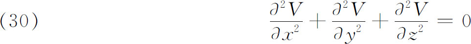
对产生重力吸引的物体的内部或外部任何点（x，y，z）都成立，其中V是x，y和z的函数。泊松指出，如果（x，y，z）在吸引体内部，则满足
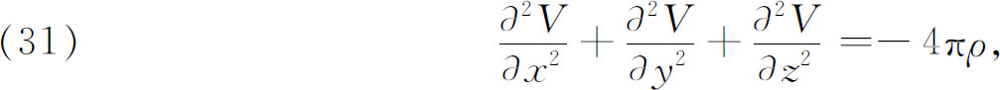
其中ρ是吸引体密度，也是x，y，z的一个函数。虽然（31）仍叫做泊松方程，但像他自己所承认的，他对其正确性的证明即使以那个时代标准来看也是不严密的。
在这同一篇论文中，说到当电荷被允许自行分布在任何导体表面，则V在表面上的值必定是常数时，泊松提请注意在电的研究中可利用这函数V。在别的论文中，他解决了许多求电荷在互相邻近的诸导体表面上分布的问题。他的基本原理是，在各个导体的任何一个的内部，静电合力必须为零。
在位势方程方面，尽管有拉普拉斯、泊松、高斯以及别人的工作，但关于它的解的一般性质在19世纪20年代还几乎毫无所知，那时确信通积分必须包含两个任意函数，一个给出解在边界上的值，另一个给出导数在边界上的值。然而在温度满足位势方程的稳态热传导情形，人们知道只要温度在表面上给定了，整个三维物体内部的温度或热分布就确定了。因此在位势方程的上述假定的通解中，任意函数之一必须按某种方式由某一个别的条件固定下来。
在这点上，通过自修而成功的英国数学家格林（1793—1841）企图用彻底的数学方式来论述静电磁学。1828年格林出版了一本私人印刷的小册子《关于数学分析应用于电磁学理论的一篇论文》（An Essay on the Application of Mathematical Analysis to the Theories of Electricity and Magnetism）。此文未受到重视，直到威廉·汤普森（William Thomson）爵士（开尔文勋爵，1824—1907）发现了它，认识到它的巨大价值，才把它发表于《数学杂志》(8)。格林从泊松的论文中学到许多东西，他也把位势函数的概念移用到电磁学。
他从（30）式开始，证明了下述定理：设U与V是x，y，z的任意两个连续函数，它们的导数在一任意物体的任何点上都不为无穷。其主要定理断言［我们将用ΔV表示（30）的左边，虽然格林没有用它］其中n是物体表面指向内部的法向，dσ是曲面元。定理（32）恰巧也曾由俄国数学家奥斯特罗格拉茨基（Michel Ostrogradsky，1801—1861）证明过，他在1828年(9)把这定理呈给了彼得堡科学院。
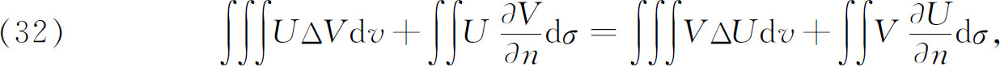
然后格林指出V和它的每个一阶导数在物体内部连续这一要求可以用来代替V的导数所应满足的边界条件。根据这一事实，格林用V在边界（其函数假设已给定）上的值V和另一个具有如下性质的函数U来表示物体内部的V：（a）U在表面上必须为0；（b）在内部一个固定的但未确定的点P上，U像
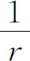
那样变为无穷，其中r是P与任何另一点间的距离；（c）U在内部必须满足位势方程（30）。如果U已知（它可能是比较容易找到的，因为它满足比V较为简单的条件），那么V在每一内点可以表示为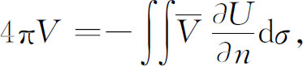
其中积分展布在曲面上，而
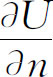
是U沿垂直于曲面而指向物体内部方向上的导数。不用说，P的坐标包含在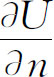
内，而且是在P处的变量。这个由格林引进的后来黎曼称之为格林函数的函数U已成为偏微分方程的一个基本概念。与V一样，格林用“位势函数”的术语称这个特殊函数U，他求得位势方程解的方法与用特殊函数的级数的方法相反，称为奇异点方法。遗憾的是，函数U没有一般的表达式，也没有求它的一般方法。在这件事情上，格林满足于对电荷所产生的电位的情形，给出U的物理意义。格林应用他的定理和概念于电磁学问题。1833年他又着手研究变密度椭球体的引力位势问题(10)。在这个工作中，格林证明了当V在物体边界上给定时，在整个物体上刚好有一个函数满足ΔV＝0，没有奇点，有给定的边界值。为了做出他的证明，格林假定了存在一个函数极小化积分
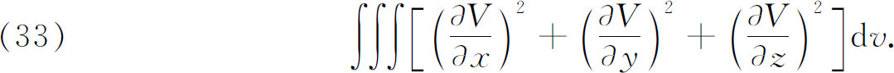
这是狄利克雷原理的第一次使用（参看第27章第8节）。
格林在1835年的这篇论文中，做了许多用n维代替三维的工作，又给出了我们现在叫做超球面函数的重要结果，它是拉普拉斯球面调和函数的推广。因为格林的工作在一个时期内没有出名，所以其他一些人独立地做了这个工作中的某些部分。
在分析引入英国后，格林是第一个沿着大陆上的工作线索前进的英国大数学家。他的工作培育了数学物理学者的庞大的剑桥学派，其中包括威廉·汤普森爵士、斯托克斯爵士（Sir Gabriel Stokes）、瑞利勋爵（Lord Rayleigh）和麦克斯韦（James Clerk Maxwell）。
继格林成就之后的是高斯1839年(11)的主导性著作《与距离平方成反比而作用的吸引力和排斥力的普遍定理》（Allgemeine Lehrsätze in Beziehung auf die im verkehrten Verhältnisse des Quadrats der Entfernung wirkenden Anziehungs - und Abstossungs - kräfte）。高斯严格地证明了泊松的结果，即在作用体内部一点处成立ΔV＝-4πρ，而ρ满足条件在该点及周围一小区域内连续。这个条件在作用体的表面上是不满足的。在表面上
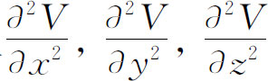
有跳跃。到这时为止，在位势方程和泊松方程方面的工作，都假定了解的存在性。格林关于存在格林函数的证明完全基于物理的理由。从存在性观点看，位势理论的基本问题是要证明存在一个位势函数V（威廉·汤普森在大约1850年时称它为调和函数），它的值在一个区域的边界上是给定了的，在区域内满足ΔV＝0。人们可以直接证实这件事，或者先证实格林函数U的存在性，然后再从它得到V。建立格林函数或V本身的存在性的问题称为狄利克雷问题或位势理论的第一边值问题，是这门学科中的最基本和最古老的存在性问题。当V在边界上的法向导数已给定时，要找函数V使其在区域内部满足ΔV＝0的问题，采用莱比锡的教授卡尔·诺伊曼（1832—1925）的名字叫诺伊曼问题。这个问题叫做位势理论的第二基本问题。
一条通向建立方程ΔV＝0的解的存在性问题的路径，格林已经采用过（请看［33］），但是威廉·汤普森把它提到突出地位。1847年(12)威廉·汤普森发表了一条定理或原理，这一原理在英国以它的名字命名，在大陆则叫做狄利克雷原理，因为黎曼这样称呼它。虽然威廉·汤普森是用较为普遍的形式叙述的，但原理的本质可以这样说：曲面S把区域分为内部区域T和外部区域T′，考虑在T和T′上分别有连续二阶导数的一切函数U的集合。这些函数U处处连续，并且在S上取一连续函数f的值。极小化狄利克雷积分
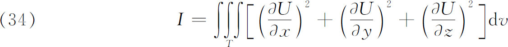
的函数V就是满足ΔV＝0并且在边界S取值为f的一个函数。（34）和ΔV的联系在于：按变分学的意义，I的一级变分是ΔV，而对于极小化的V，ΔV必须是0。因为对于实的U，I不可能是负的，所以看来很清楚，极小化函数V一定存在，从而不难证明它是唯一的。于是狄利克雷原理是探讨位势理论中狄利克雷问题的一条途径。
黎曼在复变函数方面的工作给狄利克雷问题和原理本身以新的重要性。黎曼在他的博士论文中关于V的存在性的“证明”用了二维情形的狄利克雷原理，但像他自己所承认的，这个证明是不严格的。
魏尔斯特拉斯在他的1870年的一篇文章中(13)对狄利克雷原理提出批评时指出，极小化函数U的先验存在性是不为正确推理所支持的。对一切连续可微函数U（它从内部区域到指定边界值上是连续变动的），此积分有一个下界，那是对的。但是在连续的可微的函数类中是否存在一个函数U0达到这下界却是未经证明的。
解位势方程的另一技术是利用复函数论。虽然达朗贝尔在他1752年的著作（第27章第2节）中和欧拉在一些特殊问题中已经用这技术解过位势方程，但直到19世纪中叶复函数论才活跃地应用于位势理论。函数论与位势理论的相依关系基于如下事实：如果u＋iv是z的一个解析函数，则u和v两者都满足拉普拉斯方程。此外，如果u满足拉普拉斯方程，则使u＋iv解析的共轭函数v必定存在（第27章第8节）。
把方程Δu＝0用于研究流体流动时，函数u（x，y）就是亥姆霍兹所称的速度势，而这时
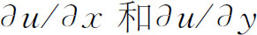
就表示流体在任一点（x，y）的速度分量。在静电学的情形下，u是静电位而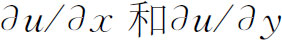
是电力分量。在这两种情形下，曲线u＝常数是等位线，而正交于u＝常数的曲线v＝常数都是流线或趋势线（电力线）。函数v（x，y）叫流势函数。由于这个函数的物理意义，把它引进来显然是有用的。在解位势方程时，使用复函数论的一个优点来自这样一个事实，即如果F（z）＝F（x＋iy）是解析函数，因而它的实部和虚部满足ΔV＝0，那么经过变换
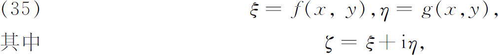
把x与y变换到ξ与η，就产生另一个解析函数G（ζ）＝G（ξ＋iη），它的实部和虚部也满足ΔV（ξ，η）＝0。现在如果原来的位势问题ΔV＝0必须在某区域D中求解，那么经适当选择变换，变换后的方程ΔV＝0必须在区域D′中求解，而D′可能简单得多。这里，利用保角变换，如像施瓦茨-克里斯托费尔变换，是极为有益的。
我们不深入讨论复函数论在位势理论中的用法了，因为它的用法的细节远远超出解偏微分方程的任何基本方法论。然而，值得再次注意的是，许多数学家拒绝使用复函数，因为他们仍对复数感到不安。在剑桥大学，甚至在1850年，还用繁笨的手段以避免牵涉到复函数。拉姆的《流体运动的数学理论教程》（Treatise on the Mathematical Theory of the Motion of Fluids），出版于1879年，是第一本在剑桥承认接受函数论的书。这本书仍然是一本经典著作［今称为《流体动力学》（Hydrod ynamics）］。